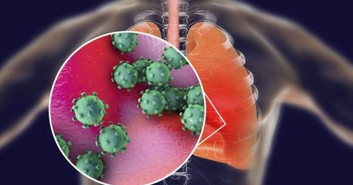

O Coronavírus é uma família de vírus que causam infecções respiratórias. O novo agente do coronavírus foi descoberto em 31/12/19 após casos registrados na China.
Os primeiros coronavírus humanos foram isolados pela primeira vez em 1937. No entanto, foi em 1965 que o vírus foi descrito como coronavírus, em decorrência do perfil na microscopia, parecendo uma coroa.
A maioria das pessoas se infectam com os coronavírus comuns ao longo da vida, sendo as crianças pequenas mais propensas a se infectarem com o tipo mais comum do vírus.Os coronavírus mais comuns que infectam humanos são o alpha coronavírus 229E e NL63 e beta coronavírus OC43, HKU1.
Quanto à transmissão, presume-se que acontece apenas por gotícula — ou seja, uma pessoa tosse, fala ou expectora e em contato próximo com outra passa o vírus. As máscaras descartáveis viraram símbolo da epidemia. Em muitos lugares, mesmo alguns que sequer registraram casos, o produto se esgotou. Estevão, no entanto, não recomenda a máscara como item de proteção individual. “Em geral, ela é mal usada. Há quem a tire para tossir, por exemplo, ou use por um tempo longo demais, quando já está molhada e sem capacidade de proteger”. Segundo o infectologista, a melhor maneira de se prevenir de qualquer tipo de resfriado é lavar as mãos. “A lavagem das mãos é fundamental em qualquer epidemia e em qualquer época”, aponta. “O álcool gel pode ser usado, mas lavar as mãos com água e sabão já é excelente”.
Eles possuem um material genético na forma de RNA, que é envolto por um capsídeo viral e um envelope membranoso. No envelope são encontradas diferentes proteínas e glicoproteínas, que são importantes no processo de reconhecimento celular e subsequente infecção da célula que o vírus irá parasitar. Após a infecção, o RNA viral é liberado no interior da célula e é utilizado no processo de produção de proteínas virais e de novas fitas de RNA, formando novos vírus.
A replicação viral segue as seguintes etapas:
1. Adsorção (Spike/receptor);
2. Liberação genoma Viral p/ interior celular;
3. Tradução de enzimas do complexo; Replicação/Transcrição (pol1ab);
4. Transcrição do RNAm em segmentos de polaridade negativa;
5. Transcrição do RNAm em segmentos de polaridade +;
6. Tradução de proteínas estruturais;
7. Replicação do RNA gênomico;
8. Composição do novo vírion;
9. Liberação da partícula viral.
A replicação viral não é estática e existe um tempo que vai desde a adsorção do vírus as células hospedeiras até a liberação de novas partículas virais. O SARS-Cov-19 é liberado da célula por brotamento, e não por lise celular. Após a saída da célula, o vírus adsove nas células vizinhas e, assim, sucessivamente. Como ainda não há um estudo sobre o tempo da replicação do coronavirus desde a entrada do vírus na célula até a saída da nova partícula viral, o aparecimento de IgM e IgG ainda não está bem definido, embora desde dezembro de 2019, mais de 600 publicações tenham sido colocadas à disposição da Sociedade Científica.